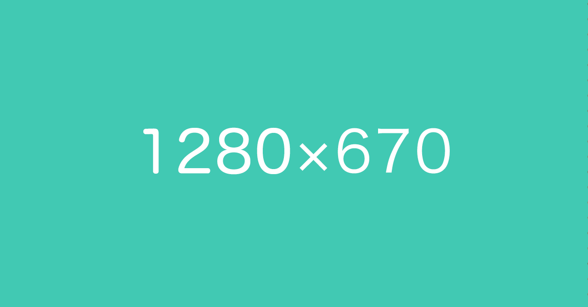

noteプレビュー
タイトルは現在
{{ charaCount }}
文字
本文は現在
{{ charaCountbody }}
文字
タイムライン
検索結果
noteタイムラインイメージ(PC)

{{ title }}
{{ title | readMore(155, '...')}}
{{ description }}
{{ description | readMore(188, '...')}}
123
45
noteユーザー
３時間前
note検索結果イメージ(PC)
{{ title }}
{{ title | readMore(52, '...')}}
{{ description }}
{{ description | readMore(74, '...')}}
123
45
noteユーザー
３時間前
このサイトについて
noteのタイムラインのプレビューが確認できます。
（2019年5月20日時点の情報です）
@koushikagawa